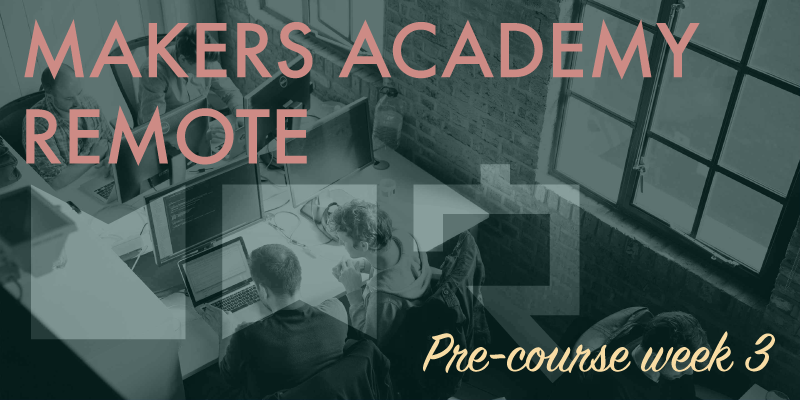

Pre-course week 3 been challenging but enjoyable, although the sheer amount of work required was probably a little too much to reasonably expect from anybody who's still working a full-time job.
So much to do
A few months ago in preparation for our initial interviews we were told to complete chapters 1-8 of Chris Pine's Learn To Program (the free online version, not the slightly different print version). This week our work has been to complete the remaining chapters 9-14, although this time taken from the print version, which features more challenges than its online counterpart.
Only a couple of days into the week I became aware that I was already falling well behind where I should have been. Because I'm still working a full-time job all of my weekday coding has to be done late in the evenings and into the night, but even when coding until midnight every day and leaving myself with only four hours sleep (not at all recommended) I was still falling behind.
Thankfully (for me at least) it became clear by the middle of the week that many others were struggling too, and even those who don't work full-time jobs couldn't seem to keep up with the workload. As the week progressed I managed to make up some lost ground, but I never did catch up to where I should have been on any given day. As the week drew to a close the prospect that we'd soon receive additional weekend challenges was concerning, with so much of the week's work still left to do, how could we possibly have time for anything more?
This has been the first week that our Slack channels have remained very quiet, surely a sign of how busy we've all been. Toward the end of the week students did begin to discuss how much work they had left to do, and while very few did somehow seem to be close to the finish line, a good majority of us still had a long way to go. When Nikesh from the Makers Academy team asked on Slack how many of us had yet achieved a green tick on Travis CI, indicating that the week's work had been completed, the responses, or lack of responses, probably left him with little doubt that this may have been too big of a challenge during the pre-course. It's common knowledge that Makers Academy alter the content of their course as frequently as every six weeks based on the feedback from the preceding cohort, and I suspect that this week's work might have been a departure from the usual, and that we may just have proven it too much to handle. You're welcome, future cohorts.
I feel that I should warn potential students of how difficult the pre-course can be if you're not able to work on it full-time. It's proposed as a warm up for the full course, which should be achievable in 15-20 hours per week around your current commitments. However in my opinion, as well as the opinions of others I've spoken with, 15-20 hours just isn't a realistic estimate. I now consider Makers Academy a four month long course, not three, and if you're trying to fit that first month in alongside a full-time job then you'll very likely feel that you're struggling to keep up. Also be aware that the 15-20 hour projection is for the weekday work alone, because at the weekends you'll be sent additional work, which may well take the entire weekend to complete. During the pre-course (excluding the Christmas break, thankfully) I've had to heavily limit the time I can spend with my wife and son, just to keep up with the workload, and that takes a mental toll. Of course everything I've said here depends on your commitments during the week, and I don't want to dissuade anybody from applying for the course, just be prepared to put in a huge amount of hours if you have other commitments during the pre-course.
More Ruby
Regarding the work itself, it's been challenging and very enjoyable to work through the remainder of Learn To Program. I'm pleased with how much Ruby coding knowledge I've managed to retain, and I solved some difficult challenges much more easily that I'd have expected. I'm still not experienced enough to make use of some of the more advanced concepts that we've been taught about, but I can understand and follow tutorials about them, so I'm sure that just a little more experience is all that's needed.
We worked a lot with the Rspec testing framework this week, because most of the Learn To Program challenges came with their own Rspec tests. However these tests weren't created by Chris Pine, but presumably by somebody on the Makers Academy team, and there were some minor discrepancies. There were times when Pine's challenges specified that we were free to code particular features however we wished, but then the Rspec test was structured in such a way that it expected only one particular solution, otherwise it would fail. I suppose that decisions had to be set in stone when writing the tests, because it would have been difficult to write tests that could cater for such open-ended instructions. What it meant in practice however was that once we'd read what Chris Pine wanted us to do for a challenge, we'd then have to check the specs (that's what the cool kids call Rspec tests) to see what they actually wanted from us, before we could begin to develop a solution. Perhaps that was Makers Academy's idea all along?
Weekend challenge
At the end of the week we were miraculously granted a reprieve when no weekend challenge was issued, most likely because by Friday so few of us had actually managed to complete the week's work, or even get close to completing it. The only instruction for the weekend was to complete the week's work, then to spend any additional time working through the Ruby koans tutorial. It took me a further twelve hours on Saturday to finish the week's work, and then Sunday was spent working though the first third of the Ruby koans.
I find it kind of funny, the full-time Makers Academy course is billed as a super intensive experience that can drive students to tears, yet compared with trying to fit all of this pre-course work around a full-time job, I'm genuinely looking forward to the full-time course for a bit of a rest. No matter how difficult the course turns out to be, it can't be as hard as this. However I'm loving every minute of the pre-course, I'm learning a huge amount, and I feel grateful to be on this journey. Bootcamps aren't supposed to be easy.